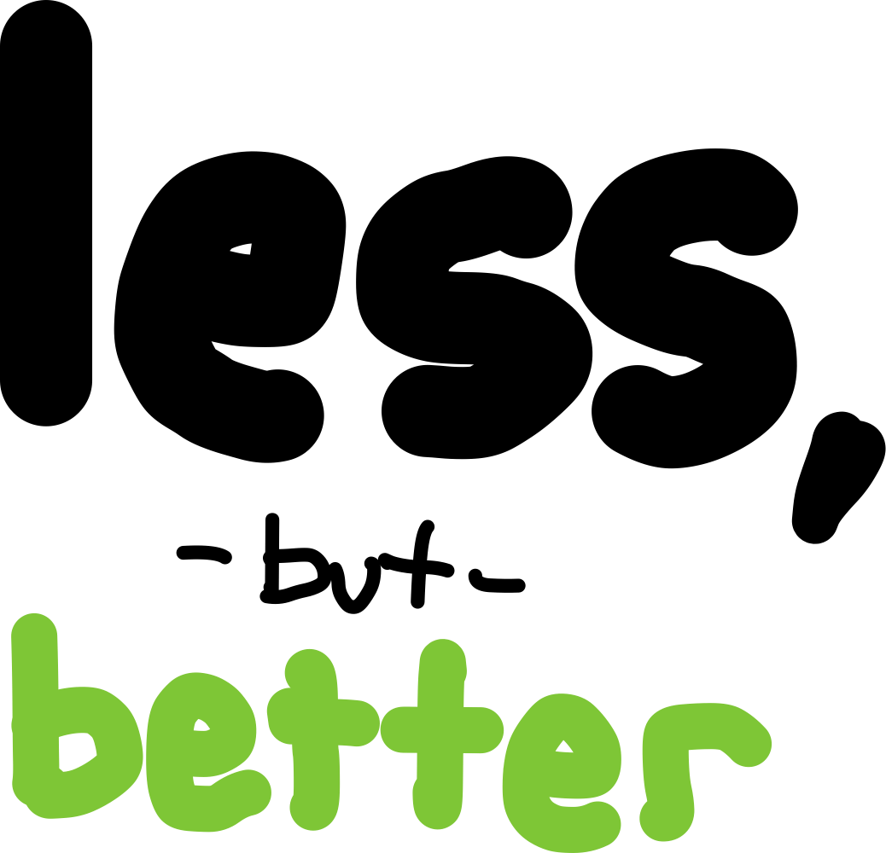

Yo.
The Philosophy
My favorite philosophy:

“Less, but better” is a recognition of the limits of our time, energy, and capacity. Its meaning is ambiguous, but intentionally so. All interpretations of the phrase are good. Here’s 3 ways to look at it.
Do Less, but Do It Better
If you want to achieve the things you do at a high level, you can’t be doing too many things.
Chase two rabbits, lose them both. If you pursue your dream, you have a good chance of making it happen. If you chase ALL your dreams, you may find yourself getting nowhere1. Do more by doing less, it’s not a platitude, it’s the truth. Pick a goal, pursue it relentlessly. Don’t succumb to target confusion.
Have Less, but Have Better Stuff
In order to love the things you own, you can’t own too much. Humans are born with the natural inclination to have a favorite shirt. You have one or two favorites, for sure. The question is, why do you have the shirts that definitely aren’t your favorite?
It’s better to buy two 10 shirts that are just fine.
Do the research. Get the good one. Once you have it, love it. Maintain it. Don’t buy a glut of crap you hate fixing when it breaks down. Buy the good thing that you are happy to spend the time on to keep in good condition.
Less is Better
Another interpretation of the phrase “less, but better” is that simply having (or doing) less IS better. That’s it. It’s not that you spend an equivalent amount of resources but on fewer (but nicer) things/activities, it’s just having fewer things or activities. We are wired to acquire things. Nature abhors a vacuum, and so, too, does your calendar - if you let it. Same could be said of the empty rooms you have in the house you just bought.
The problem: our ancestors, the creatures we evolved from, never had the capability to worry about “too much”… now it’s trivially easy for anyone of even modest means in a developed country to find themselves over consuming, over indulging, and over extending themselves beyond what’s healthy or what would make them actually happy. You are often better off having less than you’d probably want. I think more often than not.
Other Unrelated Stuff
Values, Principles, and Methods
The terms “values” and “principles” can be nebulous. I think a good way to ground them is to consider them, along with “methods” as a hierarchy of increasingly concrete things.
Values are concepts.
Principles are general verb phrases.
Methods are specific actions that are examples of the principle in motion.
| Value | Principle | Methods |
|---|---|---|
| Charity | Give what you can to those who need it more | I will donate 25% of my bonuses and volunteer one day per quarter at XYZ shelter |
| Simplicity | Do the simplest thing | I will favor plans with the fewest moving parts. I won’t reinvent the wheel. I will apply the Pareto Principle rather than do it all. |
Steep Learning Curve
Much like the term “high concept2”, people use the term “steep learning curve” to mean the opposite of what it should literally mean.
If it takes forever to learn something, it would have a shallow learning curve. It takes a long time to climb. If it’s steep, then that would mean you learn it quickly.
Apple Software Updates
I like iOS 17. Shortcuts are faster now. Standby is unnecessary, but nice to have. Weirdly the improvements to the phone app may be my surprise favorite thing.
Comparison
| Apples | Oranges | |
|---|---|---|
| Category | Food | Food |
| Sub-category | Fruit | Fruit |
| Sub-sub-category | Round fruit | Round fruit |
| Sub-sub-sub-category | Palm-sized, round fruit | Palm-sized, round fruit |
| Price | ~$1 | ~$1 |
| Lifespan | ~week | ~week |
| Color | Red or Green, typically | Orange |
That wasn’t hard.
Top 10: Topics that are Versions of “Less, but Better”
I recognize the irony of making a Top 5 about “Less, but Better” into a Top 10.
10. The Pomodoro Technique & Time Blocking
The Pomodoro Technique is when you choose a task to do, set a timer for ~20 minutes to an hour, start the timer, then perform dedicated work on that task until the timer finishes. Between each timer session take a few minutes to take a break. This is a specific implementation of the more generic concept of “Time Blocking” - setting aside specific a block time to work on a specific thing. When done properly - you’re preparing for the work before it starts, removing distractions, and focusing solely on the task at hand. It can be a great way to get things done.
Less time, spent better.
9. The Pareto Principle
The Pareto Principle states that 80% of the outcome of a process/system are driven by 20% of its inputs and that by controlling just those inputs you can greatly affect the outcome with relatively little effort. The Pareto Principle can (and should) be applied to basically every system or process you want to improve.
There are a ton of examples of the success of a rigorous and intentional application of the Pareto Principle, but my favorite is Costco. They don’t stock every possible option and permutation of the goods they carry. If you want olive oil, you MIGHT have two choices. They realized that 80% of the sales came from 20% of the products… so why have the other ones taking up shelf space that you could be using to sell other, unrelated high-performance goods?
Fewer products, highly vetted for better quality. Better profits and loyalty.
8. Frugal Models
When it comes to decision making, Daniel Kahneman suggests we are often better off using simple algorithms (with as little as 2 independent inputs) rather than our subjective opinion.
Expert judges who took into account dozens of factors and weighed them all in their heads did worse at predicting flight risk and risk of committing additional crimes than a simple decision algorithm that only took into account the age of the criminal and whether or not they have committed prior offenses.
Fewer inputs. Better consistency of application. Better accuracy.
7. Checklists
According to Atul Gawande, the good checklist should have 5 to 9 items, fit on one page, and only cover the heavy hitters. Anything longer will wind up not getting used.
Less text, better consistency. Better results.
6. YAGNI
For the 90%-100% of you who read this who don’t code, the heading “YAGNI” isn’t a typo, but instead an acronym for a coding principle I suck at.
👉 YAGNI = You’re Not Gonna Need It.
Don’t write code for “imagined” use cases or requirements. Write code to fulfill actual requirements when they show up. I suck at this. I think a 80% of the lines of code I’ve written over the past 4 months was eventually deemed unnecessary and deleted.
Fewer features, better conceptual integrity. Better (faster) results.
5. Intermittent Fasting
I am not an expert in nutrition, but from what I’ve read one of the main mechanisms behind the purported benefits of intermittent fasting is simply that you end up eating less. When it comes to eating for most 1st-world people, less is better. Beyond that, though, your meal preparation also benefits. You’re preparing one fewer meals per day. You are less likely to get burnt out on cooking. You’ll cook better foods more often. Intermittent fasting is very much less, but better.
Eating less often, but eating better.
4. One-bag Travel
People who travel infrequently carry armloads of bags through the airport, dropping stuff on the ground every time they hit some form of transition. People who travel a lot tend to pack the same thing (or darn close to it) every time. There’s a devoted fanbase of the concept of one-bag travel. This is bringing less, but better stuff with you when you go places. If you can get over the fear that you won’t have a thing you need for an imagined scenario, you can find yourself enjoying the moment a lot easier when you get there.
Carrying less, but more thought out stuff. Better travel experience.
3. “More wood behind fewer arrows”
Phrase I’ve heard before which is the essence of less, but better. It’s what John Doerr suggested Google should do a while back.
Do less, but do it better.
2. Meditation
Meditation is many things. I’m no expert in this either, but one thing I’ve understood meditation practice to include is the intentional cultivation of focusing on less (e.g. your breath), but focusing on that harder. This trains your mind to focus on what’s important.
Less mental chatter, better presence.
1. “Minimalism”
Most people associate “minimalism” with possessions. In reality, owning minimal things is only one particular form of minimalism. You could take a minimalist approach to all sorts of things.
Less clutter, better freedom. Less to maintain, better average level of maintenance. Less to do, but doing it better and more fully.
Quotes:
I would have written a shorter letter, but I did not have the time. Blaise Pascal
Don’t half-ass two things… whole-ass one thing. Nick Offerman
Footnotes
-
In general a good thing to shoot for is optionality, where you have a trial period persueing a dedicated end. You run multiple low-cost experiments and see which ones look promising based on their emperical results. This works well for sampling totally different goals, and it works for using different means to achieve the same goal. Less, but better does not mean “Do only this thing even if it’s not working”. ↩
-
I’m not wearing a shirt. And that’s my favorite shirt. ↩